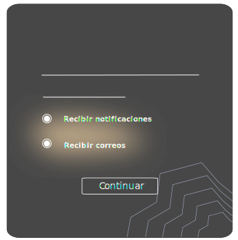

CATALOGO
PATRONES
TRASLAWEB
CATALOGO
PATRONES
TRASLAWEB
CATALOGO
PATRONES
TRASLAWEB
¿Te han mentido en un sitio web?
Tras la mentira
Estos patrones oscuros buscan engañar mandando información falsa al usuario que lo presione o haga que se confíe.
-

Estás viendo un producto en una página, al momento de bajar a mirar los comentarios y ver lo que la gente opina solo se observan testimonios destacados; son comentarios sin ningún tipo de respaldo sumamente sospechosos.
Comentarios falsos
¿Te has sentido confundido en un sitio web?
Tras la confusión
Estos patrones quieren confundir al usuario mediante el uso del lenguaje de manera ambigua o manipuladora; y el uso de elementos visuales que resaltan las opciones que benefician a la página.
-
Se refiere a un patrón que busca inducir al usuario a realizar algo distinto a lo que quiere, buscando que se confunda, en donde la redacción se presenta de manera ambigua. Estas pueden ser condiciones de uso ambiguas, los botones con etiquetas poco intuitivas o engañosas, entre otras.

Redacción engañosa
Estás tratando de comprar un producto en línea, al momento de querer comparar el precio se dificulta bastante, es debido a la forma en la que presentan la información, juntando las características individuales de los productos, descuentos, entre otros.

Comparación confusa
¿Te han cobrado extra en un sitio web?
Tras los pagos
Estos patrones son los que buscan sacar dinero al usuario sin su consentimiento mediante cargos adicionales o suscripciones sin dar previo aviso de su inclusión.
-
¿Te han interrumpido en un sitio web?
Tras la interrupción
Estos patrones tratan de obstaculizar alguna tarea que está realizando el usuario en el sitio mediante elementos como anuncios o procesos secundarios, que no permiten finalizar con comodidad el proceso.
-
Consiste en un patrón que selecciona de forma automática opciones en la interfaz, antes de que el usuario pueda hacerlo o sea consciente de la selección. Al preseleccionar opciones trata de inducir al usuario a un tipo de respuesta y acción restringiendo la toma de decisiones en su experiencia.
Preselección
¡No te preocupes, también existen prácticas buenas!
Buenas prácticas
Una buena práctica es una opción más ética de cómo una página podría realizar tácticas que busquen el beneficio de la página, sin pasar encima del beneficio del usuario.